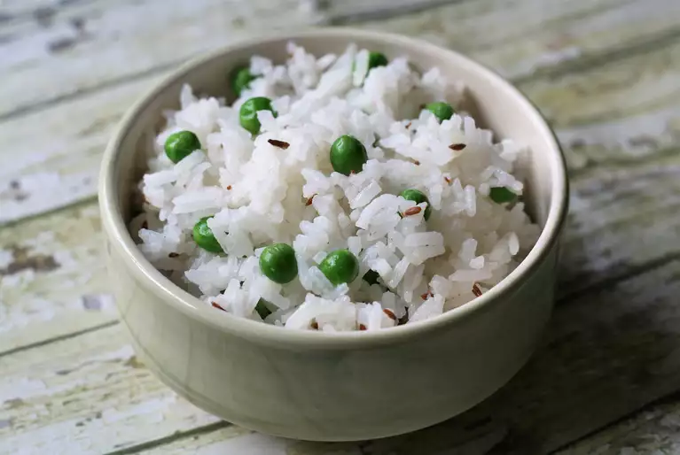

Basmati

Description
Fragrant basmati rice sauteed with carrots, onions, fresh ginger, peanuts, and cilantro. You will be surprised to taste this delicious rice.
Ingredients
- Water
- Basmati Rice
- Roasted peanuts
- Sliced Onion
- Ginger root
- Carrots
- Salt
- Cayenne Pepper
- Cilantro
Steps
- Combine rice and water in a medium saucepan. Bring to a boil over high heat. Reduce heat to low, cover with lid, and allow to steam until tender, about 20 minutes.
- While rice is cooking, grind peanuts in a blender and set aside. Heat the margarine in a skillet over medium heat. Stir in the onion; cook and stir until the onion has softened and turned golden brown about 10 minutes. Stir in ginger, carrots, and salt to taste. Reduce heat to low and cover to steam 5 minutes. Stir in cayenne pepper and peanuts. When rice is done, add it to skillet and stir gently to combine with other ingredients. Garnish with chopped cilantro.
Go Home